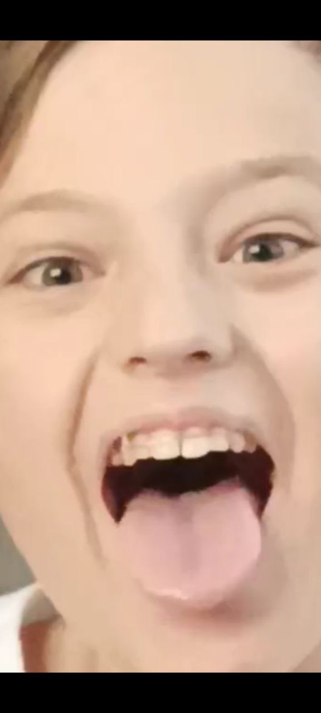
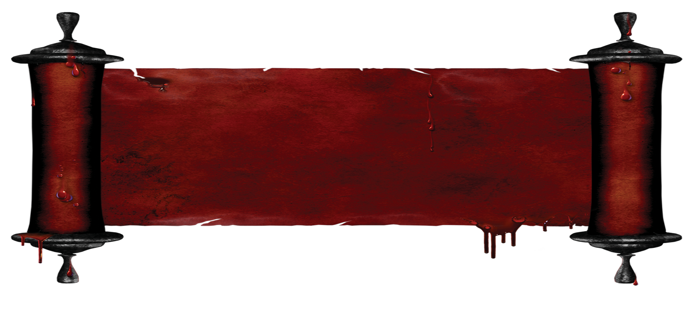

БАБУШКА MINE


Здравствуйте внучата.До меня дошла новость что нашу деревню БУХАЛОВО хотят убрать с лица земли, я прожила
в этой деревне 74 года. Пожалуйста подпишите петицию чтобы мою родную деревушку не снесли нахуй.
Однажды я отправился в деревню Бухалово, чтобы узнать о жизни моей бабушки, о ее уникальном пути и о том,
как она оставила неизгладимый след в сердцах тех, кто ее знал. Бабушка прожила большую часть своей жизни в
этой прекрасной деревне, и ее история наполнена теплом, настоящими ценностями и памятными моментами.
Вспоминая своего детства, я вижу ее дом, скрытый среди зелени, который всегда наполнялся ароматом деревьев и
цветов. Здесь бабушка жила со своим мужем – дедушкой, и разводила свою маленькую ферму. Они оба заботились о
своих животных с такой привязанностью и уважением, что каждый житель деревни был поражен этим зрелищем.
Бабушка была истинной хранительницей старых традиций. Она знала, как правильно обрабатывать землю, что
делать, чтобы растения росли здоровыми и плодородными, и как собирать урожай с заботой и благодарностью. Ее
сад был полон разнообразных фруктов и овощей, которые она делилась со своими соседями и друзьями. Бабушка
всегда гордилась тем, что могла предложить свежую, органическую пищу своей семье и окружающим.
Бабушка не только была заботливой фермершей, но и знала, как создавать теплую и уютную атмосферу в своем
доме. Она умела варить самые вкусные блюда на дровяной печи, которые заполняли весь дом ароматом домашней
кухни. Ее пироги, варенье и консервы стали настоящей легендой среди посетителей.
Однако, ее жизнь в деревне Бухалово была не только наполнена трудами на ферме и кулинарными удачами. Бабушка
также была волонтером в местной школе, где помогала детям с уроками и читала им истории перед сном. Ее
любовь к образованию и стремление делиться своими знаниями вдохновляли каждого ребенка